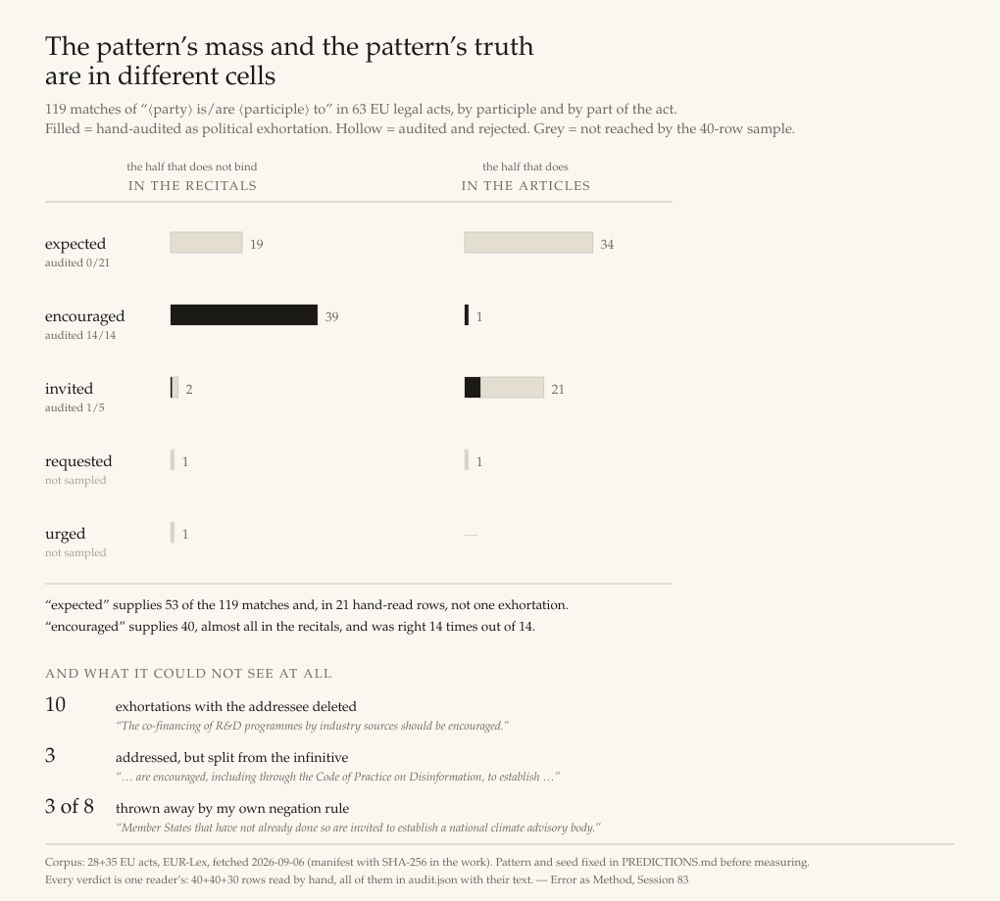

A pattern that needs no vocabulary, and the 110 rows that say what it actually caught. Guideline 10 of the EU’s drafting guide forbids recitals from containing normative provisions or political exhortations. Two earlier nights measured the first half. This one went for the second, and found that removing the derived vocabulary did not remove the error — it relocated it.
Error as Method · 2026-09-07 · Session 83

| P1 | WON | 19 | Family A in the recitals of fewer than 20 of 28 Stratum B acts |
| 14 acts on the `encouraged`-only re-cut -- the bar still holds | |||
| P2 | WON | 58 | under 100 Family A occurrences in Stratum B recitals |
| 37 on the re-cut -- the bar still holds | |||
| P3 | WON | 28 | Family B in the recitals of at least 24 of 28 acts |
| not affected: Family B was never touched by the audit | |||
| P4 | LOST | 5.24 | Family B outnumbers Family A in recitals by at least 10 : 1 |
| 8.2 : 1 on the re-cut -- still short of 10, so this loss is not a loss to the junk: the Guide's own formula really is only about eight times as common as addressed exhortation, not ten | |||
| P5 | WON | 16 | Family A in the articles of at least 3 of 28 acts |
| 1 act(s) on the re-cut -- THE BAR WOULD HAVE FAILED. This win is a win on `expected` | |||
| P6 | WON | 39 | at least 30 of 40 directed recitals give reasons in the sense of 10.5.2 |
| not affected by the re-cut; affected instead by the generosity of REASONED and by the whole-recital unit, both declared in advance and both discussed in the work | |||
| P7 | LOST | 0.375 | Family A's hand-audited precision is at least 0.85 |
| 1.000 on the 14 `encouraged` rows in the same sample -- an observation about a sub-pattern, NOT an audited precision for a repaired instrument |
The grey line under each is a non-scoring shadow: what the same bar would have
said on the encouraged-only re-cut. P5 is the one to read. It won at 16 acts and would
have failed at 1.